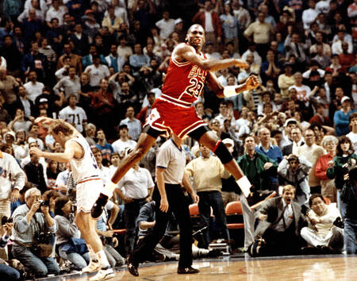

Michael Jordan
Una leyenda del baloncesto

Here's a time line of Michael Jordan's life:
- 1963 - Nacimiento de Michael Jordan en Brooklyn, Nueva York
- 1981 - Ingresa a la Universidad de North Carolina
- 1982 - Gana el campeonato de la NCAA con North Carolina
- 1984 - Seleccionado en el draft de la NBA por los Chicago Bulls
- 1988 - Gana el concurso de clavadas en el All-Star Game
- 1991-1993 - Gana tres campeonatos consecutivos de la NBA con los Bulls
- 1993 - Anuncia su primera retirada del baloncesto
- 1995 - Regresa a la NBA y gana tres campeonatos más con los Bulls
- 1998 - Gana su sexto campeonato de la NBA
- 1998 - Se retira por segunda vez del baloncesto
- 2001 - Regresa al baloncesto con los Washington Wizards
- 2003 - Se retira definitivamente del baloncesto
- 2009 - Ingresa al Salón de la Fama del Baloncesto
If you have time, you should read more about this incredible human being on his Wikipedia entry.